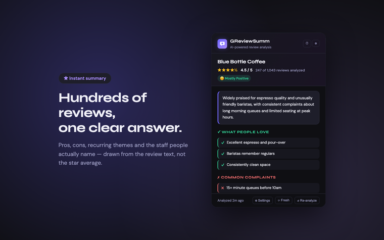
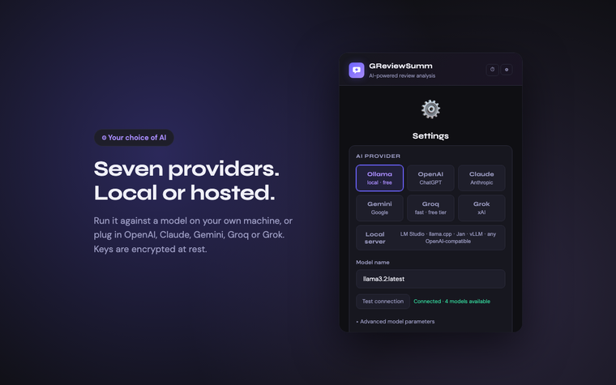
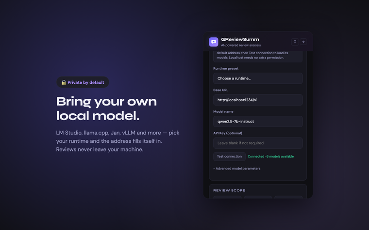

Read 1,000 reviews
in about a minute.
GReviewSumm collects the reviews on a Google Maps page and turns them into pros, cons, recurring themes and the staff people actually name — using whichever AI you choose, including a model running on your own computer.
Pending review on the Chrome Web Store — install from source in the meantime.
What it actually does
The reviews panel on a busy place holds hundreds of entries you will never scroll through. This reads them for you.
Pros and cons
Specific, recurring points drawn from the review text — not a generic star average.
Themes
The topics that come up most: parking, wait times, service, whatever this place is known for.
Named staff
Employees praised by name across multiple reviews — filtered so reviewers' own names never leak in.
Time filters
All reviews, the newest N, or only the last 1, 3, 6 or 12 months.
Your language
Summaries in the reviews' own language, or pinned to one you choose.
Cached
Results and collected reviews are kept for 24 hours, so a second look is instant.
Bring your own model
Point it at a model running on your own machine and the review text never leaves your computer. Prefer a hosted API? Those work too — you decide.
Runs locally
Or a hosted API
Pick your runtime, get its default address filled in. Hit Test connection and the model list loads from the server itself — no guessing at port numbers or model identifiers.
What it looks like



Privacy, concretely
Not a slogan — here is exactly where the data goes.
No server of ours
There is no backend. Nothing is sent to us, because there is nowhere to send it.
Reviews go to one place
Only to the provider you selected. Choose a local model and they never leave your machine.
Keys encrypted at rest
API keys are AES-GCM-256 encrypted in local storage, never shown back to you, never sent anywhere but that provider.
No analytics
No telemetry, no tracking, no ads, no account. The popup makes zero third-party requests — even the fonts are bundled.
Install
Not yet on the Chrome Web Store. Until it is, load it from source — it takes about two minutes.
Get a model running
Easiest local start: install Ollama, then ollama pull llama3.2 and ollama serve. Any other runtime works too — see the setup guide.
Build the extension
git clone https://github.com/lauming1111/GReviewSumm.git, then npm install and npm run build.
Load it in Chrome
Open chrome://extensions, turn on Developer mode, click Load unpacked and pick the review-lens-extension/ folder.
Open a place and hit Analyze
Go to any business on Google Maps, click the icon, press Analyze Reviews.
Support the project
GReviewSumm is free, has no ads and collects nothing. If it saved you some scrolling, a tip is welcome.
Always verify an address before sending. Crypto transfers cannot be reversed.